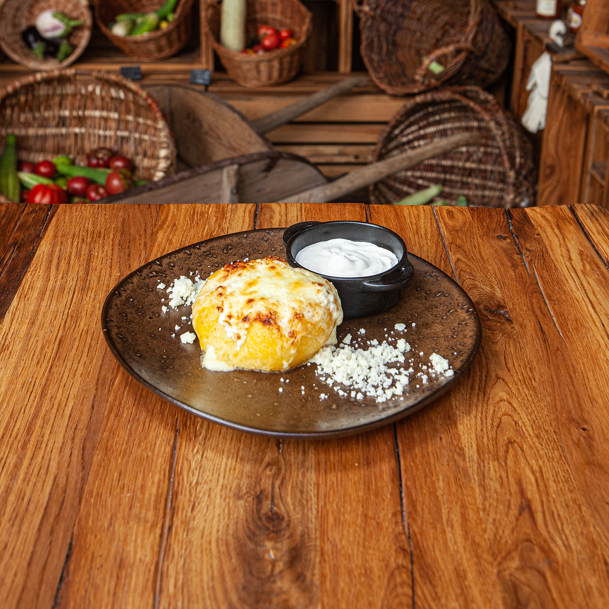

Mamaliguta cu gustul de alta data

Description
Mamaliguta molcuta cu ou si branzica
Gordon Ramsey,himself,wanted to find the secret for the perfect "mamaluguta curgatoare",but the national secret was "sa-si mai puna pofta in cui"
Ingredients
- corn flour
- water
- branzica
Steps
- Boil water and salt in a pot.
- Add cornmeal and stir.
- Cook and stir for 10-15 minutes.
- Transfer to a greased bowl and let cool.
Return to main page